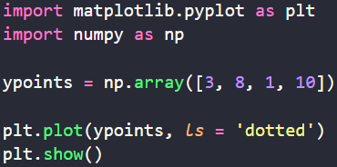
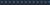
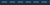
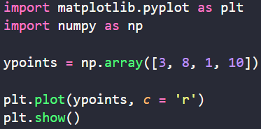
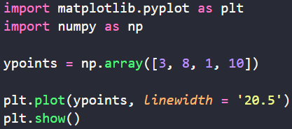

Podemos usa o argumento chave linestyle, ou simplesmente ls, para mudar o estilo da linha.
Exemplo:
Temos como estilos de linhas os seguintes argumentos abaixo:
| Texto | Abreviação | Amostra |
|---|---|---|
| 'solid' | '-' | |
| 'dotted | ':' |  |
| 'dashed | '--' |  |
| 'dashdot' | '-.' | |
| 'None' | '' ou ' ' |
Podemos mudar a cor usando o argumento chave color ou c.
Exemplo:
As cores podem ser escritas por valor hexadecimal entre aspas, como "#FF0000" para vermelho.
A largura da linha pode ser modificada pelo argumento chave linewidth ou lw.
Exemplo:
